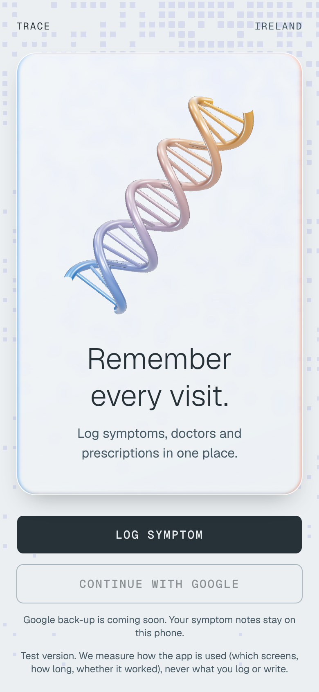

A health app that feels like a quiet, well-lit room. Light "mist" surfaces, one glowing 3D idea per scene, small squares and mono labels for precision. Built only from what the app already is.

Welcome · DNAIcon
Mist
#eceff1
Ink
#263238
Blue
#1565c0
Indigo
#9fa8da
Orange
#ffa726
Tap line
#e64a19
Type
Remember every visit.
Chest · Add a note · 02 / 03
Geist for words, Geist Mono caps for labels and counters.
Motif 1 · the DNA
blue → indigo → amber, glossy
Motif 2 · contour hologram
Motif 3 · square dither
Motif 4 · glass with a blue left edge and orange right edge
Feels like
Quiet.Precise.Kind.Private.Motion direction (from the animation rules)
- Every shot becomes the next: the DNA straightens into the body's contour lines; the orange tap dot becomes the note panel.
- Keep the key object dead centre. Always a slow drift or push.
- Fast in, slow out. One continuous curve per move, no zoom-in-then-out.
- Text: Geist, sentence case, words fade up from blur. Light from one soft source.
Keep out
No real people's health details on screen. No medical claims or promised outcomes. Say "test version" until it is more than that. Nothing implies the HSE endorses Trace.